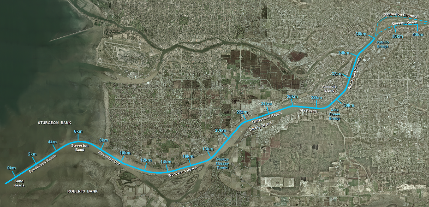

Niveaux de l'eau prévus
Paramètres
Date:
Fleuve Fraser :
Bras sud (km 0-40)
Bras nord (km 0-30)
Bras principal (km 40-92)
Débit fluvial à Hope :
Prévu (
m³s)
Réel (
m³s)
Sélectionné
m³/s
Défini par l'utilisateur
m³/s
Intervalle :
15 minute
30 minute
1 heure
2 heure
Rapport :
Niveaux d'eau
Vélocités

Appliquer
Imprimer
Fleuve Fraser -
Bras sud
Le
à intervalle
1 heure
Débit à Hope de
m3/s (
Prévu
)
Heure (HNP)
Le niveau d'eau est reporté dans le zéro des cartes, qui est relatif au niveau d'eau bas local. Cliquez sur une heure ou un emplacement pour afficher un graphique.